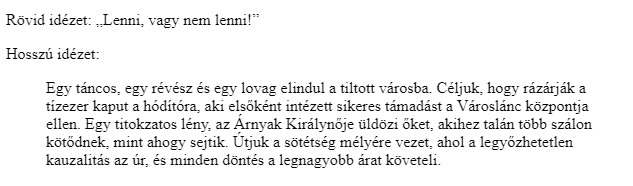

arrow_circle_up
Alap elemek:
-
Rövid idézet (quotation):
- Jelölés: q
-
Egy rövidebb, beágyazott idézet egy másik
szövegforrásból.
- A böngésző általában idézőjelekkel veszi körbe.
-
Az idézet helyét a
cite attribútumban
adhatjuk meg.
-
Beágyazott elem.
-
Hosszú idézet (citation):
-
Jelölés: blockquote.
- Egy hosszabb idézet egy másik szövegforrásból.
- A böngészők általában behúzva jelenítik meg.
-
Az idézet helyét a
cite attribútumban
adhatjuk meg.
-
Blokkszintű elem.

-
Rövidítés (abbreviation):
- Jelölés: abbr.
-
Rövidítések és betűszavak (acronym) jelölésére.
-
Használjuk a
title attribútumot a
rövidítések teljes nevéhez.
-
Beágyazott elem.
-
Elérhetőség (contact information):
- Jelölés: address.
-
Egy cikk, dokumentum szerzőjének, tulajdonosának
bármilyen elérhetősége: postai cím, e-mail stb.
- A böngészők általában dőlt betűvel szedik.
-
Blokkszintű elem.
-
Hivatkozás (cite):
- Jelölés: cite.
-
Egy kreatív műalkotás (regény, kép, vers stb.)
címének a jelölésére.
- A böngészők általában dőlt betűvel szedik.
-
Beágyazott elem.
-
Kétirányú felülírás (bi-directional override):
- Jelölés: bdo.
-
Ezzel tudjuk beállítani a szöveg megjelenésének az
irányát. Ehhez a
dir="rtl" vagy
dir="ltr" attribútumot
használjuk
-
Beágyazott elem.
Források:
w3schools/html
mdn/html